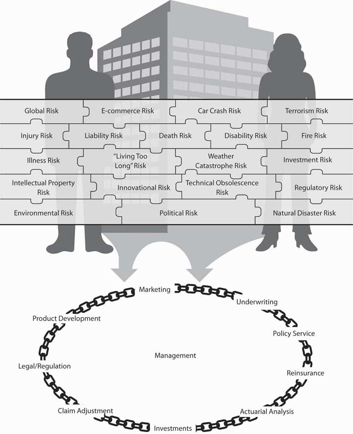
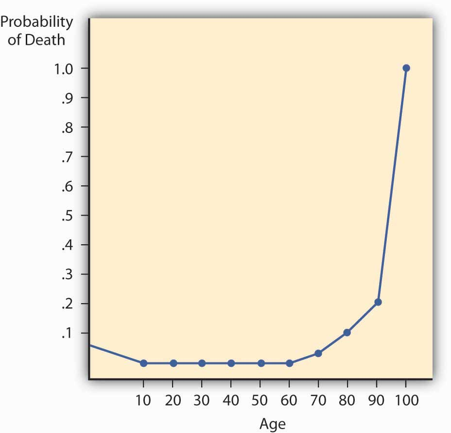

The decision to seek coverage is only the first of many important choices you will have to make about insurance. Whether you are acting as your own personal risk manager or on behalf of your business, it will help you to know how insurance companies work. This chapter will explain the internal operations of an insurance company and will dispel the notion that insurance jobs are all sales positions. The marketing aspect of insurance is important, as it is for any business, but it is not the only aspect. An interesting and distinctive characteristic of insurance is that it is really a business with two separate parts, each equally important to the success of the operation. One part is the insurance underwriting business; the other is the investment of the funds paid by insureds.
In this chapter we cover the following:
As we have done in each chapter, we first link the chapter to the complete picture of our holistic risk management. As consumers, it is our responsibility to know where our premium money is going and how it is being used. When we transfer risk to the insurance company and pay the premium, we get an intangible product in return and a contract. However, this contract is for future payments in case of losses. Only when or if we have a loss will we actually see a return on our purchase of insurance. Therefore, it is imperative that the insurance company be there when we need it. To complete the puzzle of ensuring that our holistic risk management process is appropriate, we also need to understand how our insurance company operates. Because the risks are not transferred to just one insurer, we must learn about the operations of a series of insurers—the reinsurers that insure the primary insurers. The descriptions provided in this chapter are typical of most insurers. However, variations should be expected. To grasp how we relate to the operations of a typical insurer, look at Figure 7.1 "Links between the Holistic Risk Picture and Insurance Company Operations". The figure describes the fluid process of the operations within an insurer. Each function is closely linked to all the other functions, and none is performed in a vacuum. It is like a circular chain in which each link is as strong as the next one. Because insurers operate in markets with major influences, especially catastrophes (both natural and human-made), the external conditions affecting the insurers form an important part of this chapter. The regulatory structure of insurers is shown in the second part of the link in Figure 7.1 "Links between the Holistic Risk Picture and Insurance Company Operations", which separates the industry’s institutions into those that are government-regulated and those that are non- or semiregulated. Regardless of regulation, however, insurers are subject to market conditions.
Figure 7.1 Links between the Holistic Risk Picture and Insurance Company Operations
Thus, when we select an insurer, we need to understand not only the organizational structure of that insurance firm, we also need to be able to benefit from the regulatory safety net that it offers for our protection. Also important is our clear understanding of insurance market conditions affecting the products and their pricing. Major rate increases for coverage do not happen in a vacuum. While past losses are important factors in setting rates, outside market conditions, availability, and affordability of products are also very important factors in the risk management decision.
In this section we elaborate on the following:
We begin with marketing despite the fact that it is not the first step in starting a business. From a consumer’s point of view, it is the first glimpse into the operations of an insurer. Insurance may be bought through agents, brokers, or (in some cases) directly from the insurer (via personal contact or on the Internet). An agent legally represents the company, whereas a broker represents the buyer and, in half of the states, also represents the insurer because of state regulations.Etti G. Baranoff, Dalit Baranoff, and Tom Sager, “Nonuniform Regulatory Treatment of Broker Distribution Systems: An Impact Analysis for Life Insurers,” Journal of Insurance Regulations, Regulations 19, no. 1 (Fall 2000): 94. Both agents and brokers are compensated by the insurer. The compensation issue was brought to the limelight in 2004 when New York State Attorney General Eliot Spitzer opened an investigation of contingent commissions that brokers received from insurers; these contingent commissions were regarded as bid rigging. Contingent commissions are paid to brokers for bringing in better business and can be regarded as profit sharing. As a result of this investigation, regulators look for more transparency in the compensation disclosure of agents and brokers, and major brokerage houses stopped the practice of accepting contingency commission in the belief that clients view the practice negatively.“2006: The Year When Changes Take Hold,” Insurance Journal, January 2, 2006, accessed March 6, 2009, http://www.insurancejournal.com/magazines/west/2006/01/02/features/64730.htm; Steve Tuckey, “NAIC Broker Disclosure Amendment Changes Unlikely,” National Underwriter Online News Service, April 15, 2005, accessed March 6, 2009, http://www.nationalunderwriter.com/pandc/hotnews/viewPC.asp?article =4_15_05_15_17035.xml; “NAIC Adopts Model Legislation Calling For Broker Disclosures Defers One Section for Further Consideration” at http://www.naic.org/spotlight.htm; Mark E. Ruquet, “MMC Says Contingent Fees No Longer A Plus” National Underwriter Online News Service, February 15, 2006.
In many states, producerAnother name for both agents and brokers. is another name for both agents and brokers. This new name has been given to create some uniformity among the types of distribution systems. Because life/health insurance and property/casualty insurance developed separately in the United States, somewhat different marketing systems evolved. Therefore, we will discuss these systems separately.
Most life/health insurance is sold through agents, brokers, or (the newest term) producers, who are compensated by commissions. These commissions are added to the price of the policy. Some insurance is sold directly to the public without sales commissions. Fee-only financial planners often recommend such no-load insurance to their clients. Instead of paying an agent’s commission, the client pays the planner a fee for advice and counseling and then buys directly from the no-load insurer. Unlike the agent, the planner has no incentive to recommend a high-commission product. Whether your total cost is lower depends on whether the savings on commissions offsets the planner’s fee.
Some companies insist that their agents represent them exclusively, or at least that agents not submit applications to another insurer unless they themselves have refused to issue insurance at standard premium rates. Others permit their agents to sell for other companies, though these agents usually have a primary affiliation with one company and devote most of their efforts to selling its policies.
The two dominant types of life/health marketing systems are the general agency and the managerial (branch office) system.
A general agentAn independent businessperson rather than an employee of the insurance company who is authorized by contract with the insurer to sell insurance in a specified territory. is an independent businessperson rather than an employee of the insurance company and is authorized by contract with the insurer to sell insurance in a specified territory. Another major responsibility is the recruitment and training of subagents. Subagents usually are given the title of agent or special agent. Typically, subagents are agents of the insurer rather than of the general agent. The insurer pays commissions (a percentage of premiums) to the agents on both new and renewal business. The general agent receives an override commission (a percentage of agents’ commissions) on all business generated or serviced by the agency, pays most of it to the subagents, and keeps the balance for expenses and profit. Agent compensation agreements are normally determined by the insurer.
In most cases, the general agent has an exclusive franchise for his or her territory. The primary responsibilities of the general agent are to select, train, and supervise subagents. In addition, general agents provide office space and have administrative responsibilities for some customer service activities.
A large number of life/health insurers use personal producing general agents. A personal producing general agentAgent who sells for one or more insurers, often with a higher-than-normal agent’s commission and seldom hires other agents. sells for one or more insurers, often with a higher-than-normal agent’s commission and seldom hires other agents. The extra commission helps cover office expenses. The trend is toward an agent representing several different insurers. This is desirable for consumers because a single insurer cannot have the best products for all needs. To meet a client’s insurance needs more completely, the agent needs to have the flexibility to serve as a broker or a personal producing general agent for the insurer with the most desirable policy.
A branch office is an extension of the home office headed by a branch manager. The branch managerA company employee who is compensated by a combination of salary, bonus, and commissions related to the productivity of the office to which he or she is assigned. is a company employee who is compensated by a combination of salary, bonus, and commissions related to the productivity of the office to which he or she is assigned. The manager also employs and trains agents for the company but cannot employ an agent without the consent of the company. Compensation plans for agents are determined by the company. All expenses of maintaining the office are paid by the company, which has complete control over the details of its operation.
Group life, health, and retirement plans are sold to employers by agents in one of the systems described above or by brokers. An agent may be assisted in this specialized field by a group sales representative. Large volumes of group business are also placed through direct negotiations between employers and insurers. A brokerage firm or an employee benefits consulting firm may be hired on a fee-only basis by the employer who wishes to negotiate directly with insurers, thus avoiding commissions to the agent/broker. In these direct negotiations, the insurer typically is represented by a salaried group sales representative.
Supplemental insurance plans that provide life, health, and other benefits to employees through employer sponsorship and payroll deduction have become common. These plans are marketed by agents, brokers, and exclusive agents. The latter usually work on commissions; some receive salaries plus bonuses.
Like life/health insurance, most property/casualty insurance is sold through agents or brokers who are compensated on a commission basis, but some is sold by salaried representatives or by direct methods. The independent (American) agency system and the exclusive agency system account for the bulk of insurance sales.
The distinguishing characteristics of the independent (American) agency system are the independence of the agent, the agent’s bargaining position with the insurers he or she represents, and the fact that those who purchase insurance through the agent are considered by both insurers and agents to be the agent’s customers rather than the insurer’s. The independent agentAgent who usually represents several companies, pays all agency expenses, is compensated on a commission plus bonus basis, and makes all decisions concerning how the agency operates. usually represents several companies, pays all agency expenses, is compensated on a commission plus bonus basis, and makes all decisions concerning how the agency operates. Using insurer forms, the agent binds an insurer, sends underwriting information to the insurer, and later delivers a policy to the insured. The agent may or may not have the responsibility of collecting premiums. Legally, these agents represent the insurer, but as a practical matter they also represent the customer.
An independent agent owns the x-dateHas the right to contact the customer when a policy is due for renewal.; that is, he or she has the right to contact the customer when a policy is due for renewal. This means that the insured goes with the agent if the agent no longer sells for the insurance company. This ownership right can be sold to another agent, and when the independent agent decides to retire or leave the agency, the right to contact large numbers of customers creates a substantial market value for the agency. This marketing system is also known as the American agency system. It is best recognized for the Big I advertisements sponsored by the Independent Insurance Agents & Brokers of America. These advertisements usually emphasize the independent agent’s ability to choose the best policy and insurer for you. (Formerly known as the Independent Insurance Agents of America, the 106-year-old association recently added the “& Brokers” to more accurately describe its membership.Sally Roberts, “Big I Changes Name to Reflect Membership Changes,” Business Insurance, May 6, 2002.)
Several companies, called direct writersCompanies that market insurance through exclusive agents.,The term direct writer is frequently used to refer to all property insurers that do not use the Independent Agency System of distribution, but some observers think there are differences among such companies. market insurance through exclusive agents. Exclusive agentsAgents permitted to represent only their company or a company in an affiliated group of insurance companies. are permitted to represent only their company or a company in an affiliated group of insurance companies. A group is a number of separate companies operating under common ownership and management. This system is used by companies such as Allstate, Nationwide, and State Farm. These insurers compensate the agent through commissions that are lower than those paid to independent agents, partly because the insurer absorbs some expenses that are borne directly by independent agents. The insurer owns the x-date. The customer is considered to be the insurer’s rather than the agent’s, and the agent does not have as much independence as do those who operate under the independent agency system. Average operating expenses and premiums for personal lines of insurance tend to be lower than those in the independent agency system.
Some direct writers place business through salaried representativesEmployees of the company., who are employees of the company. Compensation for such employees may be a salary and/or a commission plus bonus related to the amount and quality of business they secure. Regardless of the compensation arrangement, they are employees rather than agents.
A considerable amount of insurance and reinsurance is placed through brokers. A brokerIndividual who solicits business from the insured and also acts as the insured’s legal agent when the business is placed with an insurer. solicits business from the insured, as does an agent, but the broker acts as the insured’s legal agent when the business is placed with an insurer. In about half the states, brokers are required to be agents of the insurer. In the other states, brokers do not have ongoing contracts with insurers—their sole obligation is to the client. When it appears desirable, a broker may draft a specially worded policy for a client and then place the policy with an insurer. Some property/casualty brokers merely place insurance with an insurer and then rely on this company to provide whatever engineering and loss-prevention services are needed. Others have a staff of engineers to perform such services for clients. Modern brokerage firms provide a variety of related services, such as risk management surveys, information systems services related to risk management, complete administrative and claim services to self-insurers, and captive insurer management.
Brokers are a more significant part of the marketing mechanism in commercial property, liability, employee benefits, and marine insurance than in personal lines of insurance. Brokers are most active in metropolitan areas and among large insureds, where a broker’s knowledge of specialized coverages and the market for them is important. Some brokerage firms operate on a local or regional basis, whereas others are national or international in their operations.
With today’s proliferation of lines and services, it is extremely difficult for brokers to understand all the products completely. Brokers are always looking for unique product designs, but gaining access to innovative products and actually putting them into use are two different things. Generally, each broker selects about three favorite insurers. The broker’s concern is the underwriting standards of their insurers. For example, a broker would like to be able to place a client who takes Prozac with an insurer that covers such clients.
With today’s proliferation of Internet marketingSelecting an insurance product and comparing price and coverage on the Internet., one can select an insurance product and compare price and coverage on the Internet. For example, someone interested in purchasing a life insurance policy can click on Insweb.com. If she or he is looking for health insurance, ehealthinsurance or other such Web sites present information and a questionnaire to fill out. The site will respond with quotes from insurers and details about the plans. The customer can then send contact information to selected insurers, who will begin the underwriting process to determine insurability and appropriate rates. The sale is not finalized through the Internet, but the connection with the agent and underwriters is made. Any Internet search engine will lead to many such Web sites.
Most insurance companies, like other businesses, set up their own Web sites to promote their products’ features. They set up the sites to provide consumers with the tools to compare products and find the unique characteristics of the insurer. See the box, Note 7.15 "Shopping for Insurance on the Internet" for a description of Internet sites.
Mass merchandisingThe selling of insurance by mail, telephone, television, or e-mail. is the selling of insurance by mail, telephone, television, or e-mail. Mass merchandising often involves a sponsoring organization such as an employer, trade association, university, or creditor; however, you are likely to be asked to respond directly to the insurer. Some mass merchandising mixes agents and direct response (mass mailing of information, for example, that includes a card the interested person can fill out and return); an agent handles the initial mailing and subsequently contacts the responding members of the sponsoring organization.
In some cases, you can save money buying insurance by mass merchandising methods. Direct response insurers, however, cannot provide the counseling you may receive from a good agent or financial planner.
A financial plannerIndividual who facilitates some insurance sales by serving as a consultant on financial matters, primarily to high-income clients. facilitates some insurance sales by serving as a consultant on financial matters, primarily to high-income clients. An analysis of risk exposures and recommendations on appropriate risk management techniques, including insurance, are major parts of the financial planning process. A fee-only financial planner, knowledgeable in insurance, may direct you to good-quality, no-load insurance products when they are priced lower than comparable products sold through agents. You are already paying a fee for advice from the financial planner. Why also pay a commission to an insurance agent or broker?
In many instances, it is appropriate for the financial planner to send you to an insurance agent. Products available through agents may have a better value than the still limited supply of no-load products. Also, your financial planner is likely to be a generalist with respect to insurance, and you may need advice from a knowledgeable agent. In any event, financial planners are now part of the insurance distribution system.
True to its name, Progressive was the first large insurer to begin selling insurance coverage via the Internet in the late 1990s. Other well-known names like Allstate and Hartford quickly followed suit. So-called aggregator sites like Insure.com, Quotesmith.com, Ehealthinsurance.com, and InsWeb.com joined in, offering one-stop shopping for a variety of products. To tap the potential of e-commerce, insurers have had to overcome one big challenge: how to sell complex products without confusing and driving away the customer. Therefore, the sale is not finalized on the Internet. The glimpse into the product is only the first step for comparative shopping.
An insurance application can be frustrating even when an agent is sitting across the desk explaining everything, but most people don’t walk out in the middle of filling out a form. On the Internet, however, about half of those filling out a quote request quit because it is too complicated or time-consuming. Most of those who do finish are “just looking,” comparing prices and services. Twenty-seven million shoppers priced insurance online in 2001, according to a recent study by the Independent Insurance Agents of America and twenty-six insurers, but less than 5 percent closed the deal electronically.
As shopping on the Internet becomes a boom business, each state department of insurance provides guidelines to consumers. For example, the Texas Department of Insurance issued tips for shopping smart on the Internet, as follows:
Insurance on the Internet—Shopping Tips and Dangers
Sources: Lynna Goch, “What Works Online: Some Insurers Have Found the Key to Unlocking Online Sales,” Best’s Review, May 2002; Ron Panko, “IdentityWeb: Linking Agents and Customers,” Best’s Review, May 2002; Google search for “shopping for insurance on the Internet”; and http://www.tdi.state.tx.us/consumer/cpinsnet.html.
Ideally, an agent has several years of experience before giving advice on complicated insurance matters. You will be interested in the agent’s experience and educational qualifications, which should cover an extensive study of insurance, finance, and related subjects. A major route for life/health agents to gain this background is by meeting all requirements for the Chartered Life Underwriter (CLU) designation. The Chartered Financial Consultant (ChFC) designation from the American College (for information, see http://www.amercoll.edu/) is an alternative professional designation of interest to life/health agents. Property/casualty agents gain a good background by earning the Chartered Property and Casualty Underwriter (CPCU) designation granted by the American Institute for Property and Liability Underwriters (see http://www.aicpcu.org/). Another, broader designation with applications to insurance is Certified Financial Planner (CFP), awarded by the Certified Financial Planner Board of Standards (see http://www.cfp-board.org/).
UnderwritingThe process of evaluating risks, selecting which risks to accept, and identifying potential adverse selection. is the process of classifying the potential insureds into the appropriate risk classification in order to charge the appropriate rate. An underwriterIndividual who decides whether or not to insure exposures on which applications for insurance are submitted. decides whether or not to insure exposures on which applications for insurance are submitted. There are separate procedures for group underwriting and individual underwriting. For group underwriting, the group characteristics, demographics, and past losses are judged. Because individual insurability is not examined, even very sick people such as AIDS patients can obtain life insurance through a group policy. For individual underwriting, the insured has to provide evidence of insurability in areas of life and health insurance or specific details about the property and automobiles for property/casualty lines of business. An individual applicant for life insurance must be approved by the life insurance company underwriter, a process that is sometimes very lengthy. It is not uncommon for the application to include a questionnaire about lifestyle, smoking habits, medical status, and the medical status of close family members. For large amounts of life insurance, the applicant is usually required to undergo a medical examination.
Once the underwriter determines that insurance can be issued, the next decision is to apply the proper premium rate. Premium rates are determined for classes of insureds by the actuarial department. An underwriter’s role is to decide which class is appropriate for each insured. The business of insurance inherently involves discrimination; otherwise, adverse selection would make insurance unavailable.
Some people believe that any characteristic over which we have no control, such as gender, race, and age, should be excluded from insurance underwriting and rating practices (although in life and annuity contracts, consideration of age seems to be acceptable). Their argument is that if insurance is intended in part to encourage safety, then its operation ought to be based on behavior, not on qualities with which we are born. Others argue that some of these factors are the best predictors of losses and expenses, and without them, insurance can function only extremely inefficiently. Additionally, some argument could be made that almost no factor is truly voluntary or controllable. Is a poor resident of Chicago, for instance, able to move out of the inner city? A National Underwriter article provided an interesting suggestion for mitigating negative characteristics: enclosing a personalized letter with an application to explain special circumstances.Paul P. Aniskovich, “Letters With Apps Can Make The Difference,” National Underwriter, Life & Health/Financial Services Edition, November 12, 2001. For example, according to the article, “If your client is overweight, and his family is overweight, but living a long and healthy life, note both details on the record. This will give the underwriters more to go on.” The article continues, “Sending letters with applications is long overdue. They will often shorten the underwriting cycle and get special risks—many of whom have been given a clean bill of health by their doctor or are well on their way to recovery—the coverage they need and deserve.”
Over the years, insurers have used a variety of factors in their underwriting decisions. A number of these have become taboo from a public policy standpoint. Their use may be considered unfair discrimination. In automobile insurance, for instance, factors such as marital status and living arrangements have played a significant underwriting role, with divorced applicants considered less stable than never-married applicants. In property insurance, concern over redlining receives public attention periodically. RedliningWhen an insurer designates a geographical area in which it chooses not to provide insurance, or to provide it only at substantially higher prices. occurs when an insurer designates a geographical area in which it chooses not to provide insurance, or to provide it only at substantially higher prices. These decisions are made without considering individual insurance applicants. Most often, the redlining is in poor urban areas, placing low-income inner-city dwellers at great disadvantage. A new controversy in the underwriting field is the use of genetic testing. In Great Britain, insurers use genetic testing to screen for Huntington’s disease,Catherine Arnold, “Britain Backs Insurers Use of Genetic Testing,” National Underwriter, Life & Health/Financial Services Edition, November 27, 2000. but U.S. companies are not yet using such tests. As genetic testing continues to improve, look for U.S. insurance companies to request access to that information as part of an applicant’s medical history.
Two major areas of underwriting controversies are discussed in the box below, Note 7.19 "Keeping Score—Is It Fair to Use Credit Rating in Underwriting?" and in Note 8.35 "Insurance and Your Privacy—Who Knows?" in Chapter 8 "Insurance Markets and Regulation". The need for information is a balancing act between underwriting requirements and preserving the privacy of insureds. The tug-of-war between more and less information is a regulatory matter. The use of credit ratings in setting premiums illustrates a company’s need to place insureds in the appropriate risk classification—a process that preserves the fundamental rules of insurance operations (discussed in Chapter 6 "The Insurance Solution and Institutions"). We will explore underwriting further in other chapters as we look at types of policies.
Body-mass index, cholesterol level, SAT score, IQ: Americans are accustomed to being judged by the numbers. One important number that you may not be as familiar with is your credit score. Determined by the financial firm Fair, Isaac, and Co., a credit score (also known as a FICO score) is calculated from an individual’s credit history, taking into account payment history, number of creditors, amounts currently owed, and similar factors.
Like your grade point average (GPA), your credit score is one simple number that sums up years of hard work (or years of goofing off). But while your GPA is unlikely to be important five years from now, your credit score will affect your major financial decisions for the rest of your life. This number determines whether you’re eligible for incentive (low-rate) financing on new cars, how many credit card offers get stuffed in your mailbox each month, and what your mortgage rate will be. The U.S. Federal Trade Commission (FTC) issued a directive to consumers about the handling of credit scores. If you are denied credit, the FTC offers the following:
Your credit score may also affect how much you’ll pay for insurance. About half of the companies that write personal auto or homeowner’s insurance now use credit data in underwriting or in setting premiums, and the bad credit penalty can be 20 percent or more. But it’s not because they’re worried that poor credit risks won’t pay their insurance premiums. Rather, it’s the strong relationship between credit scores and the likelihood of filing a claim, as study after study has borne out. Someone who spends money recklessly is also likely to drive recklessly, insurers point out; someone who is lazy about making credit card payments is apt to be lazy about trimming a tree before it causes roof damage. Often, a credit record is the best available predictor of future losses. Insurers vary on how much they rely on credit scoring—most consider it as one factor of many in setting premiums, while a few flat out refuse to insure anyone whose credit score is below a certain number—but almost all see it as a valuable underwriting tool. It’s only fair, insurers say, for low-risk customers to pay lower premiums rather than subsidizing those more likely to file claims.
Consumer advocates disagree. Using credit scores in this manner is discriminatory and inflexible, they say, and some state insurance commissioners agree. Consumer advocate and former Texas insurance commissioner Robert Hunter finds credit scoring ludicrous. “If I have a poor credit score because I was laid off as a result of terrorism, what does that have to do with my ability to drive?” he asked at a meeting of the National Association of Insurance Commissioners in December 2001. Therefore, in 2004, twenty-four states have adopted credit scoring legislation and/or regulation that is based on a National Conference of Insurance Legislators (NCOIL) model law.
The debate over the use of credit scoring has spread across the country. More states are considering regulations or legislation to curb its use by insurers.
Questions for Discussion
Sources: Barbara Bowers, “Giving Credit Its Due: Insurers, Agents, Legislators, Regulators and Consumers Battle to Define the Role of Insurance Scoring” and “Insurers Address Flurry of Insurance-Scoring Legislative Initiatives,” Best’s Review, May 2002; U.S. Federal Trade Commission at http://www.ftc.gov/bcp/conline/pubs/credit/scoring.htm. See http://www.ncoil.org/ and all media outlets for coverage of this issue, which occurs very frequently.
After insurance is sold and approved by the underwriter, records must be established, premiums collected, customer inquiries answered, and many other administrative jobs performed. Administration is defined broadly here to include accounting, information systems, office administration, customer service, and personnel management.
ServiceThe ultimate indicator upon which the quality of the product provided by insurance depends. is the ultimate indicator on which the quality of the product provided by insurance depends. An agent’s or broker’s advice and an insurer’s claim practices are the primary services that the typical individual or business needs. In addition, prompt, courteous responses to inquiries concerning changes in the policy, the availability of other types of insurance, changes of address, and other routine matters are necessary.
Another service of major significance that some insurers offer, primarily to commercial clients, is engineering and loss control. Engineering and loss controlMethods of prevention and reduction of loss whenever the efforts required are economically feasible. is concerned with methods of prevention and reduction of loss whenever the efforts required are economically feasible. Much of the engineering and loss-control activity may be carried on by the insurer or under its direction. The facilities the insurer has to devote to such efforts and the degree to which such efforts are successful is an important element to consider in selecting an insurer. Part of the risk manager’s success depends on this element. Engineering and loss-control services are particularly applicable to workers’ compensation and boiler and machinery exposures. With respect to the health insurance part of an employee benefits program, loss control is called cost containment and may be achieved primarily through managed care and wellness techniques.
In this section you studied the following:
In this section we elaborate on the following:
Actuarial analysisA highly specialized mathematic analysis that deals with the financial and risk aspects of insurance. is a highly specialized mathematic analysis that deals with the financial and risk aspects of insurance. Actuarial analysis takes past losses and projects them into the future to determine the reserves an insurer needs to keep and the rates to charge. An actuaryIndividual who determines proper rates and reserves, certifies financial statements, participates in product development, and assists in overall management planning. determines proper rates and reserves, certifies financial statements, participates in product development, and assists in overall management planning.
Actuaries are expected to demonstrate technical expertise by passing the examinations required for admission into either the Society of Actuaries (for life/health actuaries) or the Casualty Actuarial Society (for property/casualty actuaries). Passing the examinations requires a high level of mathematical knowledge and skill.
The rates or premiums for insurance are based first and foremost on the past experience of losses. Actuaries calculate the rates using various procedures and techniques. The most modern techniques include sophisticated regression analysis and data mining tools. In essence, the actuary first has to estimate the expected claim payments (equaling the net premium) then “loads” the figure by factors meant to accommodate the underwriting, management, and claims handling expenses. In addition, other elements may be considered, such as a loading to cover the uncertainty element.
In some insurance lines (called long tail lines), claims are settled over a long period; therefore, the company must estimate its future payments before it can determine losses. The payments still pending and will be paid in the future are held as a liability for the insurance company and are called loss reserves or pending (or outstanding) losses. Typically, the claims department personnel give their estimates of the amounts that are expected to be paid for each open claim file, and the sum of these case by case estimates makes up the case estimates reserve. The actuaries offer their estimates based on sophisticated statistical analysis of aggregated data. Actuaries sometimes have to estimate, as a part of the loss reserves, the payments for claims that have not yet been reported as well. These incurred but not yet reported claims are referred to by the initials IBNR in industry parlance.
The loss reserves estimation is based on data of past claim payments. Such data is typically presented in the form of a triangle. Actuaries use many techniques to turn the triangle into a forecast. Some of the traditional, but still popular, methods are quite intuitive. For pedagogical reasons, we shall demonstrate one of those methods below. A more sophisticated and modern concept is presented in the appendix to this chapter (Section 7.4 "Appendix: Modern Loss Reserving Methods in Long Tail Lines") and reveals deficiencies of the traditional methods.
A hypothetical example of one loss-reserving technique is featured here in Table 7.1 "Incurred Losses for Accident Years by Development Periods (in Millions of Dollars)" through Table 7.5 "Development of the Triangle of Incurred Losses to Ultimate (in Millions of Dollars)". The technique used in these tables is known as a triangular method of loss development to the ultimate. The example is for illustration only. Loss developmentThe calculation of how amounts paid for losses increase (mature) over time for the purpose of future projection. is the calculation of how amounts paid for losses increase (or mature) over time for the purpose of future projection. Because the claims are paid progressively over time, like medical bills for an injury, the actuarial analysis has to project how losses will be developed into the future based on their past development.
With property/casualty lines such as product liability, the insurer’s losses can continue for many years after the initial occurrence of the accident. For example, someone who took certain weight-loss medications in 1994 (the “accident year”) might develop heart trouble six years later. Health problems from asbestos contact or tobacco use can occur decades after the accident actually occurred.
Table 7.1 "Incurred Losses for Accident Years by Development Periods (in Millions of Dollars)" describes an insurance company’s incurred losses for product liability from 1994 to 2000. Incurred lossesPaid losses plus known, but not yet paid losses. are both paid losses plus known but not yet paid losses. Look at accident year 1996: over the first twelve months after those accidents, the company posted losses of $38.901 million related to those accidents. Over the next twelve months—as more injuries came to light or belated claims were filed or lawsuits were settled—the insurer incurred almost $15 million, so that the cumulative losses after twenty-four developed months comes to $53.679 million. Each year brought more losses relating to accidents in 1996, so that by the end of the sixty-month development period, the company had accumulated $70.934 million in incurred losses for incidents from accident year 1996. The table ends there, but the incurred losses continue; the ultimate total is not yet known.
To calculate how much money must be kept in reserve for losses, actuaries must estimate the ultimate incurred loss for each accident year. They can do so by calculating the rate of growth of the losses for each year and then extending that rate to predict future losses. First, we calculate the rate for each development period. In accident year 1996, the $38.901 million loss in the first development period increased to $53.679 million in the second development period. The loss development factor for the twelve- to twenty-four-month period is therefore 1.380 million (53.679/38.901), meaning that the loss increased, or developed, by a factor of 1.380 (or 38 percent). The factor for twenty-four- to thirty-six months is 1.172 (62.904/53.679). The method to calculate all the factors follows the same pattern: the second period divided by first period. Table 7.2 "Loss Factors for Accident Years by Development Periods" shows the factors for each development period from Table 7.1 "Incurred Losses for Accident Years by Development Periods (in Millions of Dollars)".
Table 7.1 Incurred Losses for Accident Years by Development Periods (in Millions of Dollars)
| Developed Months | Accident Year | ||||||
|---|---|---|---|---|---|---|---|
| 1994 | 1995 | 1996 | 1997 | 1998 | 1999 | ||
| 12 | $37.654 | $38.781 | $38.901 | $36.980 | $37.684 | $39.087 | $37.680 |
| 24 | 53.901 | 53.789 | 53.679 | 47.854 | 47.091 | 47.890 | |
| 36 | 66.781 | 61.236 | 62.904 | 56.781 | 58.976 | ||
| 48 | 75.901 | 69.021 | 67.832 | 60.907 | |||
| 60 | 79.023 | 73.210 | 70.934 | ||||
| 72 | 81.905 | 79.087 | |||||
| 84 | 83.215 | ||||||
Table 7.2 Loss Factors for Accident Years by Development Periods
| Developed Months | Accident Year | |||||
|---|---|---|---|---|---|---|
| 1994 | 1995 | 1996 | 1997 | 1998 | ||
| 12–24 | 1.431 | 1.387 | 1.380 | 1.294 | 1.250 | 1.225 |
| 24–36 | 1.239 | 1.138 | 1.172 | 1.187 | 1.252 | |
| 36–48 | 1.137 | 1.127 | 1.078 | 1.073 | ||
| 48–60 | 1.041 | 1.061 | 1.046 | |||
| 60–72 | 1.036 | 1.080 | ||||
| 72–84 | 1.016 | |||||
| 84–ultimate | ||||||
After we complete the computation of all the factors in Table 7.2 "Loss Factors for Accident Years by Development Periods", we transpose the table in order to compute the averages for each development period. The transposed Table 7.2 "Loss Factors for Accident Years by Development Periods" is in Table 7.3 "Averages of the Incurred Loss Factors for Each Accident Year". The averages of the development factors are at the bottom of the table. You see, for example, that the average of factors for the thirty-six- to forty-eight-month development period of all accident years is 1.104. This means that, on average, losses increased by a factor of 1.104 (or 10.4 percent, if you prefer) in that period. That average is an ordinary mean. To exclude anomalies, however, actuaries often exclude the highest and lowest factors in each period, and average the remainders. The last line in Table 7.3 "Averages of the Incurred Loss Factors for Each Accident Year" is the average, excluding the high and low, and this average is used in Table 7.4 "Development of the Triangles of Incurred Loss Factors to Ultimate for Each Accident Year" to complete the triangle.
Table 7.3 Averages of the Incurred Loss Factors for Each Accident Year
| Accident Year | Developed Months | |||||
|---|---|---|---|---|---|---|
| 12–24 | 24–36 | 36–48 | 48–60 | 60–72 | ||
| 1994 | 1.431 | 1.239 | 1.137 | 1.041 | 1.036 | 1.016 |
| 1995 | 1.387 | 1.138 | 1.127 | 1.061 | 1.080 | |
| 1996 | 1.380 | 1.172 | 1.078 | 1.046 | ||
| 1997 | 1.294 | 1.187 | 1.073 | |||
| 1998 | 1.250 | 1.252 | ||||
| 1999 | 1.225 | |||||
| 12–24 | 24–36 | 36–48 | 48–60 | 60–72 | 72–84 | |
| Average | 1.328 | 1.198 | 1.104 | 1.049 | 1.058 | 1.016 |
| Average of last three years | 1.256 | 1.204 | 1.093 | 1.049 | 1.058 | 1.016 |
| Average of last four years | 1.287 | 1.187 | 1.104 | 1.049 | 1.058 | 1.016 |
| Average excluding high and low | 1.328 | 1.199 | 1.103 | 1.046 | 1.058 | 1.016 |
In Table 7.4 "Development of the Triangles of Incurred Loss Factors to Ultimate for Each Accident Year", we complete the incurred loss factors for the whole period of development. The information in bold is from Table 7.2 "Loss Factors for Accident Years by Development Periods". The information in italics is added for the later periods when incurred loss data are not yet available. These are the predictions of future losses. Thus, for accident year 1997, the bold part shows the factors from Table 7.2 "Loss Factors for Accident Years by Development Periods", which were derived from the actual incurred loss information in Table 7.1 "Incurred Losses for Accident Years by Development Periods (in Millions of Dollars)". We see from Table 7.4 "Development of the Triangles of Incurred Loss Factors to Ultimate for Each Accident Year" that we can expect losses to increase in any forty-eight- to sixty-month period by a factor of 1.046, in a sixty- to seventy-two-month period by 1.058, and in a seventy-two- to eighty-four-month period by 1.016. The development to ultimate factor is the product of all estimated factors: for 1997, it is 1.046 × 1.058 × 1.016 × 1.02 = 1.147. Actuaries adjust the development-to-ultimate factor based on their experience and other information.In this example, we do not introduce actuarial adjustments to the factors. Such adjustments are usually based on management, technology, marketing, and other known functional changes within the company. The book of business is assumed to be stable without any extreme changes that may require adjustments.
To determine ultimate losses, these factors can be applied to the dollar amounts in Table 7.1 "Incurred Losses for Accident Years by Development Periods (in Millions of Dollars)". Table 7.5 "Development of the Triangle of Incurred Losses to Ultimate (in Millions of Dollars)" provides the incurred loss estimates to ultimate payout for each accident year for this book of business. To illustrate how the computation is done, we estimate total incurred loss for accident year 1999. The most recent known incurred loss for accident year 1999 is as of 24 months: $47.890 million. To estimate the incurred losses at thirty-six months, we multiply by the development factor 1.199 and arrive at $57.426 million. That $57.426 million is multiplied by the applicable factors to produce a level of $63.326 million after forty-eight months, and $66.239 million after sixty months. Ultimately, the total payout for accident year 1999 is predicted to be $72.625 million. Because $47.890 million has already been paid out, the actuary will recommend keeping a reserve of $24.735 million to pay future claims. It is important to note that the ultimate level of incurred loss in this process includes incurred but not reported (IBNR) losses. Incurred but not reported (IBNR)Estimated losses that insureds did not claim yet but are expected to materialize in the future. losses are estimated losses that insureds did not claim yet, but they are expected to materialize in the future. This is usually an estimate that is hard to accurately project and is the reason the final projections of September 11, 2001, losses are still in question.
Table 7.4 Development of the Triangles of Incurred Loss Factors to Ultimate for Each Accident Year
| Developed Months | Accident Year | ||||||
|---|---|---|---|---|---|---|---|
| 1994 | 1995 | 1996 | 1997 | 1998 | 1999 | ||
| 12–24 | 1.431 | 1.387 | 1.380 | 1.294 | 1.250 | 1.225 | 1.328 |
| 24–36 | 1.239 | 1.138 | 1.172 | 1.187 | 1.252 | 1.199 | 1.199 |
| 36–48 | 1.137 | 1.127 | 1.078 | 1.073 | 1.103 | 1.103 | 1.103 |
| 48–60 | 1.041 | 1.061 | 1.046 | 1.046 | 1.046 | 1.046 | 1.046 |
| 60–72 | 1.036 | 1.080 | 1.058 | 1.058 | 1.058 | 1.058 | 1.058 |
| 72–84 | 1.016 | 1.016 | 1.016 | 1.016 | 1.016 | 1.016 | 1.016 |
| 84–ultimate* | 1.020 | 1.020 | 1.020 | 1.020 | 1.020 | 1.020 | 1.020 |
| Development to ultimate† | 1.020 | 1.036 | 1.096 | 1.147 | 1.265 | 1.517 | 2.014 |
| * Actuaries use their experience and other information to determine the factor that will be used from 84 months to ultimate. This factor is not available to them from the original triangle of losses. | |||||||
| † For example, the development to ultimate for 1997 is 1.046 × 1.058 × 1.016 × 1.02 = 1.147. | |||||||
Table 7.5 Development of the Triangle of Incurred Losses to Ultimate (in Millions of Dollars)
| Developed Months | Accident Year | |||||||
|---|---|---|---|---|---|---|---|---|
| 1994 | 1995 | 1996 | 1997 | 1998 | 1999 | 2000 | ||
| 12 | $37.654 | $38.781 | $38.901 | $36.980 | $37.684 | $39.087 | $37.680 | |
| 24 | 53.901 | 53.789 | 53.679 | 47.854 | 47.091 | 47.890 | 50.039 | |
| 36 | 66.781 | 61.236 | 62.904 | 56.781 | 58.976 | 57.426 | 60.003 | |
| 48 | 75.901 | 69.021 | 67.832 | 60.907 | 65.035 | 63.326 | 66.167 | |
| 60 | 79.023 | 73.210 | 70.934 | 63.709 | 68.027 | 66.239 | 69.211 | |
| 72 | 81.905 | 79.087 | 75.048 | 67.404 | 71.972 | 70.080 | 73.225 | |
| 84 | 83.215 | 80.352 | 76.249 | 68.482 | 73.123 | 71.201 | 74.396 | |
| Ultimate | 84.879 | 81.959 | 77.773 | 69.852 | 74.586 | 72.625 | 75.884 | 537.559 |
| Pd. to date | 83.215 | 79.087 | 70.934 | 60.907 | 58.976 | 47.890 | 37.680 | 438.689 |
| Reserve | 1.664 | 2.872 | 6.839 | 8.945 | 15.610 | 24.735 | 38.204 | 98.870 |
The process of loss development shown in the example of Table 7.1 "Incurred Losses for Accident Years by Development Periods (in Millions of Dollars)" through Table 7.5 "Development of the Triangle of Incurred Losses to Ultimate (in Millions of Dollars)" is used also for rate calculations because actuaries need to know the ultimate losses each book of business will incur. Rate calculationsThe computation of how much to charge for insurance coverage once the ultimate level of loss is estimated plus factors for taxes, expenses, and returns on investments. are the computations of how much to charge for insurance coverage once the ultimate level of loss is estimated, plus factors for taxes, expenses, and returns on investments.
Catastrophe (cat) modelingThe use of computer technology to synthesize loss data, assess historical disaster statistics, incorporate risk features, and run event simulations as an aid in predicting future losses. is composed of sophisticated statistical and technological mathematical equations and analysis that help predict future occurrences of natural and human-made disastrous events with large severity of losses. These models are relatively new and are made possible by the exponential improvements of information systems and statistical modeling over the years. Cat modeling relies on computer technology to synthesize loss data, assess historical disaster statistics, incorporate risk features, and run event simulations as an aid in predicting future losses. From this information, cat models project the impact of hypothetical catastrophes on residential and commercial properties.Claire Wilkinson, “Catastrophe Modeling: A Vital Tool in the Risk Management Box,” Insurance Information Institute, February 2008, Accessed March 6, 2009, http://www.iii.org/media/research/catmodeling/.
Cat modeling is concerned with predicting the future risk of catastrophes, primarily in the form of natural disasters. Cat modeling has its roots in the late 1980s and came to be utilized considerably following Hurricane Andrew in 1992 and the Northridge earthquake in 1994.Michael Lewis, “In Nature’s Casino,” New York Times Magazine, August 26, 2007, Accessed March 6, 2009; http://www.nytimes.com/2007/08/26/magazine/26neworleans-t.html. The parallel rapid sophistication of computer systems during this period was fortuitous and conducive to the growth of cat modeling. Today, every conceivable natural disaster is considered in cat models. Common hazard scenarios include hurricanes, earthquakes, tornados, and floods. One catastrophic event of increased concern in recent years is that of terrorism; some effort has been made to quantify the impact of this risk through cat models as well.AIR Worldwide, Accessed March 6, 2009, http://www.air-worldwide.com/ContentPage.aspx?id=16202.
Development of catastrophe models is complex, requiring the input of subject matter experts such as meteorologists, engineers, mathematicians, and actuaries. Due to the highly specialized nature and great demand for risk management tools, consulting firms have emerged to offer cat modeling solutions. The three biggest players in this arena are AIR Worldwide, Risk Management Solutions (RMS), and EQECAT.Claire Wilkinson, “Catastrophe Modeling: A Vital Tool in the Risk Management Box,” Insurance Information Institute, February 2008, Accessed March 6, 2009, http://www.iii.org/media/research/catmodeling/. The conclusions about exposures drawn from the models of different organizations are useful to insurers because they allow for better loss predictions of specific events.
Based on inputs regarding geographic locations, physical features of imperiled structures, and quantitative information about existing insurance coverage, catastrophe models render an output regarding the projected frequency, severity, and the overall dollar value of a catastrophic occurrence. From these results, it is possible to place property into appropriate risk categories. Thus, cat modeling can be extremely useful from an underwriting standpoint. Additionally, indications of high-dollar, high-severity risks in a particular region would certainly be influential to the development of premium rates and the insurer’s decision to explore reinsurance options (discussed in the next section of this chapter). Cat models are capable of estimating losses for a portfolio of insured properties.American Insurance Association, Testimony for the National Association of Insurance Commissioners (NAIC) 9/28/2007 Public Hearing on Catastrophe Modeling. Clearly, the interest that property/casualty insurers have in loss projections from hurricane catastrophes in southern Florida would benefit from this type of modeling.
Reliance on cat models came under fire following the devastating back-to-back hurricane seasons of 2004 and 2005. Critics argued that the models that were utilized underestimated the losses. It is important to note that the insurance industry is not the only market for cat models; consequently, different methodologies are employed depending on the needs of the end-user. These methodologies might incorporate different assumptions, inputs, and algorithms in calculation.Claire Wilkinson, “Catastrophe Modeling: A Vital Tool in the Risk Management Box,” Insurance Information Institute, February 2008, Accessed March 6, 2009, http://www.iii.org/media/research/catmodeling/. The unusually active 2004 and 2005 hurricane seasons could similarly be considered outside a normal standard deviation and thus unaccounted for by the models. In response to criticisms, refinements by developers following Hurricane Katrina included near-term projections providing probable maximum loss estimates using short-term expectations of hurricane activity.
For life insurance, actuaries use mortality tablesTables that indicate the percent of expected deaths for each age group., which predict the percentage of people in each age group who are expected to die each year. This percentage is used to estimate the required reserves and to compute life insurance rates. Life insurance, like other forms of insurance, is based on three concepts: pooling many exposures into a group, accumulating a fund paid for by contributions (premiums) from the members of the group, and paying from this fund for the losses of those who die each year. That is, life insurance involves the group sharing of individual losses. To set premium rates, the insurer must be able to calculate the probability of death at various ages among its insureds, based on pooling. Life insurers must collect enough premiums to cover mortality costs (the cost of claims). In addition to covering mortality costs, a life insurance premium, like a property/casualty premium, must reflect several adjustments, as noted in Table 7.6 "Term Premium Elements". The adjustments for various factors in life insurance premiums are known as premium elementsThe adjustments for various factors in life insurance premiums.. First, the premium is reduced because the insurer expects to earn investment incomeReturns from all the assets held by the insurers from both capital investment and from premiums., or returns from all the assets held by the insurers from both capital investment and from premiums. Investment is a very important aspect of the other side of the insurance business, as discussed below. Insurers invest the premiums they receive from insureds until losses need to be paid. Income from the investments is an offset in the premium calculations. By reducing the rates, most of an insurer’s investment income benefits consumers. Second, the premium is increased to cover the insurer’s marketing and administrative expenses, as described above. Taxes are the third component; those that are levied on the insurer also must be recovered. Fourth, in calculating premiums, an actuary usually increases the premium to cover the insurer’s risk of not predicting future losses accurately. The fifth element is the profits that the insurer should obtain because insurers are not “not for profit” organizations. All life insurance premium elements are depicted in Table 7.6 "Term Premium Elements" below. The actual prediction of deaths and the estimation of other premium elements are complicated actuarial processes.
Table 7.6 Term Premium Elements
| Mortality Cost |
|---|
| − Investment income |
| + Expense charge |
| + Taxes |
| + Risk change |
| + Profit |
| = Gross premium charge |
The mortality rate has two important characteristics that greatly influence insurer practices and the nature of life insurance contracts. First, yearly probabilities of death rise with age. Second, for practical reasons, actuaries set at 1.0 the probability of death at an advanced age, such as ninety-nine. That is, death during that year is considered a certainty, even though some people survive. The characteristics are illustrated with the mortality curve.
If we plot the probability of death for males by age, as in Figure 7.2 "Male Mortality Curve", we have a mortality curve. The mortality curveCurve that illustrates the relationship between age and the probability of death. illustrates the relationship between age and the probability of death. It shows that the mortality rate for males is relatively high at birth but declines until age ten. It then rises until age twenty-one and declines between ages twenty-two and twenty-nine. This decline apparently reflects many accidental deaths among males in their teens and early twenties, followed by a subsequent decrease. The rise is continuous for females older than age ten and for males after age twenty-nine. The rise is rather slow until middle age, at which point it begins to accelerate. At the more advanced ages, it rises very rapidly.
Figure 7.2 Male Mortality Curve
As noted above, insurance companies are in two businesses: the insurance business and the investment business. The insurance side is underwriting and reserving (liabilities), while the investment side is the area of securing the best rate of return on the assets entrusted to the insurer by the policyholders seeking the security. Investment income is a significant part of total income in most insurance companies. Liability accounts in the form of reserves are maintained on balance sheets to cover future claims and other obligations such as taxes and premium reserves. Assets must be maintained to cover the reserves and still leave the insurer with an adequate net worth in the form of capital and surplus. Capital and surplusThe equivalent of equity on the balance sheet of any firm—the net worth of the firm, or assets minus liabilities. are the equivalent of equity on the balance sheet of any firm—the net worth of the firm, or assets minus liabilities.
The investment mix of the life/health insurance industry is shown Table 7.7 "Life/Health Insurance Industry Asset Mix, 2003–2007 ($ Billions)" and that of the property/casualty industry is shown in Table 7.8 "Property/Casualty Insurance Industry Asset Mix, 2003–2007 ($ Billions)". As you can see, the assets of the life insurance industry in the United States were $4.95 trillion in 2007. This included majority investments in the credit markets, which includes bonds of all types and mortgage-backed securities of $387.5 billion. As discussed in Chapter 1 "The Nature of Risk: Losses and Opportunities" and the box below, “Problem Investments and the Credit Crisis,” many of these securities were no longer performing during the credit crisis of 2008–2009. In comparison, the U.S. property casualty industry’s asset holdings in 2007 were $1.37 trillion, with $125.8 billion in mortgage-backed securities. In Chapter 5 "The Evolution of Risk Management: Enterprise Risk Management", we included a discussion of risk management of the balance sheet to ensure that the net worth of the insurer is not lost when assets held are no longer performing. The capital and surplus of the U.S. property/casualty industry reached $531.3 billion at year-end 2007, up from $499.4 billion at year-end 2006. The capital and surplus of the U.S. life/health insurance industry was $252.8 billion in 2007, up from $244.4 billion in 2006.Insurance Information Institute. The Insurance Fact Book, 2009, p 31, 36.
Table 7.7 Life/Health Insurance Industry Asset Mix, 2003–2007 ($ Billions)
| Life/Health Insurer Financial Asset Distribution, 2003–2007 ($ Billions) | |||||
|---|---|---|---|---|---|
| 2003 | 2004 | 2005 | 2006 | 2007 | |
| Total financial assets | $3,772.8 | $4,130.3 | $4,350.7 | $4,685.3 | $4,950.3 |
| Checkable deposits and currency | 47.3 | 53.3 | 47.7 | 56.1 | 58.3 |
| Money market fund shares | 151.4 | 120.7 | 113.6 | 162.3 | 226.6 |
| Credit market instruments | 2,488.3 | 2,661.4 | 2,765.4 | 2,806.1 | 2,890.8 |
| Open market paper | 55.9 | 48.2 | 40.2 | 53.1 | 57.9 |
| U.S. government securities | 420.7 | 435.6 | 459.7 | 460.6 | 467.7 |
| Treasury | 71.8 | 78.5 | 91.2 | 83.2 | 80.2 |
| Agency and GSEGovernment-sponsored enterprise.-backed securities | 348.9 | 357.1 | 368.5 | 377.4 | 387.5 |
| Municipal securities | 26.1 | 30.1 | 32.5 | 36.6 | 35.3 |
| Corporate and foreign bonds | 1,620.2 | 1,768.0 | 1,840.7 | 1,841.9 | 1,889.7 |
| Policy loans | 104.5 | 106.1 | 106.9 | 110.2 | 113.9 |
| Mortgages | 260.9 | 273.3 | 285.5 | 303.8 | 326.2 |
| Corporate equities | 919.3 | 1,053.9 | 1,161.8 | 1,364.8 | 1,491.5 |
| Mutual fund shares | 91.7 | 114.4 | 109.0 | 148.8 | 161.4 |
| Miscellaneous assets | 74.7 | 126.6 | 153.1 | 147.1 | 121.6 |
| Source: Board of Governors of the Federal Reserve System, June 5, 2008. | |||||
Source: Insurance Information Institute, Accessed March 6, 2009, http://www.iii.org/media/facts/statsbyissue/life/.
Table 7.8 Property/Casualty Insurance Industry Asset Mix, 2003–2007 ($ Billions)
| Property/Casualty Insurer Financial Asset Distribution, 2003–2007 ($ Billions) | |||||
|---|---|---|---|---|---|
| 2003 | 2004 | 2005 | 2006 | 2007 | |
| Total financial assets | $1,059.7 | $1,162.2 | $1,243.8 | $1,329.3 | $1,373.6 |
| Checkable deposits and currency | 34.6 | 25.9 | 21.0 | 29.9 | 42.7 |
| Security repurchase agreementsShort-term agreements to sell and repurchase government securities by a specified date at a set price. | 52.8 | 63.1 | 68.9 | 66.0 | 53.8 |
| Credit market instruments | 625.2 | 698.8 | 765.8 | 813.5 | 840.0 |
| U.S. government securities | 180.1 | 183.4 | 187.1 | 197.8 | 180.9 |
| Treasury | 64.7 | 71.3 | 69.2 | 75.8 | 55.1 |
| Agency and GSEGovernment-sponsored enterprise.-backed securities | 115.4 | 112.1 | 117.9 | 122.0 | 125.8 |
| Municipal securities | 224.2 | 267.8 | 313.2 | 335.2 | 368.7 |
| Corporate and foreign bonds | 218.9 | 245.3 | 262.8 | 277.0 | 285.6 |
| Commercial mortgages | 2.1 | 2.4 | 2.7 | 3.5 | 4.8 |
| Corporate equities | 178.4 | 196.6 | 199.5 | 227.0 | 235.3 |
| Trade receivables | 79.3 | 79.6 | 82.1 | 87.0 | 85.4 |
| Miscellaneous assets | 85.0 | 93.0 | 100.7 | 99.0 | 108.7 |
| Source: Board of Governors of the Federal Reserve System, June 5, 2008. | |||||
Source: Insurance Information Institute, Accessed March 6, 2009, http://www.iii.org/media/facts/statsbyissue/life/.
The liabilities are composed mostly of reserves for loss payments. For the life insurance industry, the largest component of liabilities is reserves for pensions. Life reserves are the second-largest component. For property/casualty insurers, the reserves are for all lines of insurance, depending on the mix of products sold by each company.
Many conglomerate insurance corporations own their own investment firms and provide mutual funds. In this area, insurers, like other financial institutions, are subject to regulation by the states and by the Securities and Exchange Commission.
The greater risk faced by insurance companies is not the threat of going out of business due to insufficient sales volume, but the possibility that losses will be greater than anticipated and that they won’t be covered through reserves and investment income. This further reinforces the importance of comprehending the nature of insureds’ business and properly categorizing their risks on the underwriting side, while accurately capturing loss expectations on the actuarial side. Insuring common risks in high volume leads to more accuracy in predicting losses, but these risks do not vanish simply because they have been aggregated by the insurer. Unfortunately, this concept was not taken into consideration by several large investment banks and some insurance companies during the credit crisis beginning in 2007.
The credit crisis began when the U.S, housing bubble burst, setting off a protracted period characterized by increased valuation in real property, low interest rates, speculative investing, and massive demand for homes. During the housing bubble, low interest rates coupled with high liquidity were viewed as sufficiently favorable conditions to permit the extension of credit to high-risk (or subprime) borrowers. Many people who would otherwise not qualify for loans found themselves with mortgages and the homes of their dreams. Lenders protected themselves through the issuance of variable interest rate mortgages, whereby increased risk could be transferred to borrowers in the form of interest rate hikes. While this had the potential to put already high-risk (subprime) borrowers in an even worse position to meet their monthly obligations, borrowers counted on the very liquid nature of real estate during this period as a crutch to salvage their investments. Because home valuations and turnover were rising at such rapid rates, it was reasoned that financially strapped borrowers could simply sell and pay off their mortgages rather than face foreclosure.
The cycle of high turnover feeding into the housing bubble was halted when excess inventory of new homes and interest rate increases led to a downward correction of housing prices in 2005.“Getting worried downtown.” The Economist November 15, 2007. When lenders tried to pass these rate increases on to their buyers—many of whom had put little money down and had lived in their homes for less than a year—mortgage payments skyrocketed, even to the point of leaving buyers owing more than their homes were worth (negative equity). Home buying activity thus halted, leaving real estate a highly illiquid investment. The worst-case scenario was materializing, with foreclosures leaping to a staggering 79 percent in 2007, comprised of about 1.3 million homes.“U.S Foreclosure Activity Increases 75 Percent in 2007,” RealtyTrac, January 29, 2008, Accessed March 6, 2009, http://www.realtytrac.com/ContentManagement/pressrelease.aspx?ChannelID=9&ItemID=3988&accnt=64847.
During the housing bubble, the concept of risk transfer was carried out to an egregious extent. Lenders recognized the inherent riskiness of their activities, but they compounded the problem by attempting to transfer this risk to the very source of it. In other cases, subprime loans were sold to investment banks, who bundled them into exotic investment vehicles known as mortgage-backed securities (MBSs). These securities, derived mainly from subprime mortgages, ordinarily would be comparable to junk bonds in their risk assessment. Nevertheless, by dividing them into different investment classifications and purchasing credit-default swap (CDS) insurance (discussed below), investment banks were able to acquire acceptable grades on MBSs from the major rating agencies.“Let the Blame Begin; Everyone Played Some Role—The Street, Lenders, Ratings Agencies, Hedge Funds, Even Homeowners. Where Does Responsibility Lie? (The Subprime Mess),” Business Week Online, July 30, 2007. Investment-grade MBSs were in turn marketed as collateralized debt obligations (CDOs) and other options and sold to institutional investors. Ultimately, this group was left holding the bag when foreclosures rippled through the system, rendering the derivative investments worthless. Thus, the lending pendulum swung in the opposite direction, making it difficult for normally creditworthy borrowers to secure even rudimentary business loans. The pass-the-buck mentality with respect to risk transfer precipitated this credit crunch, which came to be known as the credit crisis. Everyone wanted the risky mortgage-backed securities off their balance sheets without acknowledging the potential folly of investing in them in the first place.
As it relates to the insurance industry, recall that insurers must hold assets that are sufficient to cover their liabilities (as discussed in the previous section) at any given time. In much the same way that a mortgage holder is required to purchase mortgage insurance to protect the lender when equity accounts for less than 25 percent of the total value of his or her home, issuers of MBSs engage in what are called credit default swaps (CDSs) to reassure investors.“The Financial Meltdown of AIG and Insurers Explained.” Smallcap Network, October 27, 2008, http://www.smallcapnetwork.com/scb/the-financial-meltdown-of-aig-and-other-insurers-explained/2315/. Insuring CDSs means that an insurer, rather than the MBS issuer, will deliver the promised payment to MBS investors in the event of default (in this case, foreclosure of the underlying mortgages).
AIG was one of the largest issuers of CDS insurance at the time of the credit crisis. The tightening of standards with respect to risk forced CDS insurers like AIG to hold liquid assets such that payouts could be made in the event that all of their CDS writings made claims. To illustrate, this burden would be the equivalent of all of a company’s insured homeowners suffering total losses simultaneously. While this scenario was improbable, the capital had to be set aside as if it would occur. AIG found it impossible to shore up enough assets to match against its now enormous liabilities, plunging the company into dire financial straits. In September 2008, AIG was extended an $85 billion line of credit from the Federal Reserve,Edmund L. Andrews, Michael J. de la Merced, and Mary Williams Walsh, “Fed’s $85 Billion Loan Rescues Insurer,” The New York Times, September 17, 2008, Accessed March 6, 2009, http://www.nytimes.com/2008/09/17/business/17insure.html. adding to the list of companies bailed out by the U.S. government in the wake of the economic recession brought about by the credit crisis.
At the Senate Budget Committee hearing on March 2, 2009, Federal Reserve Board Chairman Ben Bernanke testified as to the role of failures in the regulatory environment that allowed AIG to accumulate so much bad debt on its books. Bernanke accused the company of exploiting the fact that there was no oversight of the financial products division and went on to say, “If there’s a single episode in this entire 18 months that has made me more angry [than AIG], I can’t think of one.” He likened AIG to a “hedge fund … attached to a large and stable insurance company” that made “irresponsible bets” in explaining the firm’s actions leading up to its financial meltdown. Bernanke called for the Obama administration to expand the powers of the Federal Deposit Insurance Corporation (FDIC) to address the problems of large financial institutions rather than focusing on banks alone.Arthur D. Postal, “Fed Chief Blasts AIG for Exploiting Reg System,” National Underwriter Online, Property/Casualty Edition, March 3, 2009, Accessed March 6, 2009. http://www.propertyandcasualtyinsurancenews.com/cms/nupc/Breaking+News/2009/03/03-AIG-HEARING-dp.
In this section you studied the following:
The following table shows the incurred losses of the Maruri Insurance Company for its liability line.
| Development Months | Accident Year | ||||||
|---|---|---|---|---|---|---|---|
| 1994 | 1995 | 1996 | 1997 | 1998 | 1999 | ||
| 12 | $27,634 | $28,781 | $28,901 | $26,980 | $27,684 | $29,087 | $27,680 |
| 24 | $43,901 | $43,777 | $43,653 | $37,854 | $37,091 | $37,890 | |
| 36 | $56,799 | $51,236 | $52,904 | $46,777 | $48,923 | ||
| 48 | $65,901 | $59,021 | $57,832 | $50,907 | |||
| 60 | $69,023 | $63,210 | $60,934 | ||||
| 72 | $71,905 | $69,087 | |||||
| 84 | $73,215 | ||||||
Using the example in this chapter as a guide, do the following:
Read Section 7.4 "Appendix: Modern Loss Reserving Methods in Long Tail Lines" and respond to the following:
The table below shows the cumulative claim payments of the Enlightened Insurance Company for its liability line.
| Development Year | |||||||
|---|---|---|---|---|---|---|---|
| Accident Year | 0 | 1 | 2 | 3 | 4 | 5 | 6 |
| 2002 | $27,634 | $28,781 | $28,901 | $26,980 | $27,684 | $29,087 | $27,680 |
| 2003 | $43,901 | $43,777 | $43,653 | $37,854 | $37,091 | $37,890 | |
| 2004 | $56,799 | $51,236 | $52,904 | $46,777 | $48,923 | ||
| 2005 | $65,901 | $59,021 | $57,832 | $50,907 | |||
| 2006 | $69,023 | $63,210 | $60,934 | ||||
| 2007 | $71,905 | $69,087 | |||||
| 2008 | $73,215 | ||||||
In this section we elaborate on the following:
ReinsuranceAn arrangement by which an insurance company transfers all or a portion of its risk under a contract (or contracts) of insurance to another company. is an arrangement by which an insurance company transfers all or a portion of its risk under a contract (or contracts) of insurance to another company. The company transferring risk in a reinsurance arrangement is called the ceding insurerThe company transferring risk in a reinsurance arrangement.. The company taking over the risk in a reinsurance arrangement is the assuming reinsurerThe company taking over the risk in a reinsurance arrangement.. In effect, the insurance company that issued the policies is seeking protection from another insurer, the assuming reinsurer. Typically, the reinsurer assumes responsibility for part of the losses under an insurance contract; however, in some instances, the reinsurer assumes full responsibility for the original insurance contract. As with insurance, reinsurance involves risk transfer, risk distribution, risk diversification across more insurance companies, and coverage against insurance risk. Risk diversification is the spreading of the risk to other insurers to reduce the exposure of the primary insurer, the one that deals with the final consumer.
Reinsurance may be divided into three types: (1) treaty, (2) facultative, and (3) a combination of these two. Each of these types may be further classified as proportional or nonproportional. The original or primary insurer (the ceding company) may have a treaty with a reinsurer. Under a treaty arrangementArrangement in which the original insurer is obligated to automatically reinsure any new underlying insurance contract that meets the terms of a prearranged treaty, and the reinsurer is obligated to accept certain responsibilities for the specified insurance., the original insurer is obligated to automatically reinsure any new underlying insurance contract that meets the terms of a prearranged treaty, and the reinsurer is obligated to accept certain responsibilities for the specified insurance. Thus, the reinsurance coverage is provided automatically for many policies. In a facultative arrangementArrangement in which both the primary insurer and the reinsurer retain full decision-making powers with respect to each insurance contract., both the primary insurer and the reinsurer retain full decision-making powers with respect to each insurance contract. As each insurance contract is issued, the primary insurer decides whether or not to seek reinsurance, and the reinsurer retains the flexibility to accept or reject each application for reinsurance on a case-by-case basis. The combination approach may require the primary insurer to offer to reinsure specified contracts (like the treaty approach) while leaving the reinsurer free to decide whether to accept or reject reinsurance on each contract (like the facultative approach). Alternatively, the combination approach can give the option to the primary insurer and automatically require acceptance by the reinsurer on all contracts offered for reinsurance. In any event, a contract between the ceding company and the reinsurer spells out the agreement between the two parties.
When the reinsurance agreement calls for proportional (pro rata) reinsuranceSituation in which the reinsurer assumes a prespecified percentage of both premiums and losses., the reinsurer assumes a prespecified percentage of both premiums and losses. Expenses are also shared in accord with this prespecified percentage. Because the ceding company has incurred operating expenses associated with the marketing, evaluation, and delivery of coverage, the reinsurer often pays a fee called a ceding commissionA fee paid by the reinsurer to the original insurer. to the original insurer. Such a commission may make reinsurance profitable to the ceding company, in addition to offering protection against catastrophe and improved predictability.
Nonproportional reinsuranceReinsurance that obligates the reinsurer to pay losses when they exceed a designated threshold. obligates the reinsurer to pay losses when they exceed a designated threshold. Excess-loss reinsuranceReinsurance that requires the reinsurer to accept amounts of insurance that exceed the ceding insurer’s retention limit., for instance, requires the reinsurer to accept amounts of insurance that exceed the ceding insurer’s retention limit. As an example, a small insurer might reinsure all property insurance above $25,000 per contract. The excess policy could be written per contract or per occurrence. Both proportional and nonproportional reinsurance may be either treaty or facultative. The excess-loss arrangement is depicted in Table 7.9 "An Example of Excess-Loss Reinsurance". A proportional agreement is shown in Table 7.10 "An Example of Proportional Reinsurance".
In addition to specifying the situations under which a reinsurer has financial responsibility, the reinsurance agreement places a limit on the amount of reinsurance the reinsurer must accept. For example, the SSS Reinsurance Company may limit its liability per contract to four times the ceding insurer’s retention limit, which in this case would yield total coverage of $125,000 ($25,000 retention plus $100,000 in reinsurance on any one property). When the ceding company issues a policy for an amount that exceeds the sum of its retention limit and SSS’s reinsurance limit, it would still need another reinsurer, perhaps TTT Reinsurance Company, to accept a second layer of reinsurance.
Table 7.9 An Example of Excess-Loss Reinsurance
| Original Policy Limit of $200,000 Layered as Multiples of Primary Retention | |
|---|---|
| $75,000 | Second reinsurer’s coverage (equal to the remainder of the $200,000 contract) |
| 100,000 | First reinsurer’s limit (four times the retention) |
| 25,000 | Original insurer’s retention |
Table 7.10 An Example of Proportional Reinsurance
| Total Exposure | Premium | Expenses | Net Premium* | Loss | |
|---|---|---|---|---|---|
| Reinsurer | 70% | 7,000 | 1,400 | 5,600 | 105,000 |
| Ceding Insurer | 30% | 3,000 | 600 | 2,400 | 45,000 |
| Total | 100 | 10,00 | 2,000 | 8,000 | 150,000 |
| * Net premium = Premium–Expenses | |||||
Assume 30–70 split, premiums of $10,000, expense of $2,000, and a loss of $150,000. Ignore any ceding commission.
A ceding company (the primary insurer) uses reinsurance mainly to protect itself against losses in individual cases beyond a specified sum (i.e., its retention limit), but competition and the demands of its sales force may require issuance of policies of greater amounts. A company that issued policies no larger than its retention would severely limit its opportunities in the market. Many insureds do not want to place their insurance with several companies, preferring to have one policy with one company for each loss exposure. Furthermore, agents find it inconvenient to place multiple policies every time they insure a large risk.
In addition to its concern with individual cases, a primary insurer must protect itself from catastrophic losses of a particular type (such as a windstorm), in a particular area (such as a city or a block in a city), or during a specified period of operations (such as a calendar year). An aggregate reinsurancePolicy that can be purchased for coverage against potentially catastrophic situations faced by the primary insurer. policy can be purchased for coverage against potentially catastrophic situations faced by the primary insurer. Sometimes they are considered excess policies, as described above, when the excess retention is per occurrence. An example of how an excess-per-occurrence policy works can be seen from the damage caused by Hurricane Andrew in 1992. Insurers who sell property insurance in hurricane-prone areas probably choose to reinsure their exposures not just on a property-by-property basis but also above some chosen level for any specific event. Andrew was considered one event and caused billions of dollars of damage in Florida alone. A Florida insurer may have set limits, perhaps $100 million, for its own exposure to a given hurricane. For its insurance in force above $100 million, the insurer can purchase excess or aggregate reinsurance.
Other benefits of reinsurance can be derived when a company offering a particular line of insurance for the first time wants to protect itself from excessive losses and also take advantage of the reinsurer’s knowledge concerning the proper rates to be charged and underwriting practices to be followed. In other cases, a rapidly expanding company may have to shift some of its liabilities to a reinsurer to avoid impairing its capital. Reinsurance often also increases the amount of insurance the underlying insurer can sell. This is referred to as increasing capacity.
Reinsurance is significant to the buyer of insurance for a number of reasons. First, reinsurance increases the financial stability of insurers by spreading risk. This increases the likelihood that the original insurer will be able to pay its claims. Second, reinsurance facilitates placing large or unusual exposures with one company, thus reducing the time spent seeking insurance and eliminating the need for numerous policies to cover one exposure. This reduces transaction costs for both buyer and seller. Third, reinsurance helps small insurance companies stay in business, thus increasing competition in the industry. Without reinsurance, small companies would find it much more difficult to compete with larger ones.
Individual policyholders, however, rarely know about any reinsurance that may apply to their coverage. Even for those who are aware of the reinsurance, whether it is on a business or an individual contract, most insurance policies prohibit direct access from the original insured to the reinsurer. The prohibition exists because the reinsurance agreement is a separate contract from the primary (original) insurance contract, and thus the original insured is not a party to the reinsurance. Because reinsurance is part of the global insurance industry, globalization is also at center stage.
In reality, the only tangible product we receive from the insurance company when we transfer the risk and pay the premium is a legal contract in the form of a policy. Thus, the nature of insurance is very legal. The wordings of the contracts are regularly challenged. Consequently, law pervades insurance industry operations. Lawyers help draft insurance contracts, interpret contract provisions when claims are presented, defend the insurer in lawsuits, communicate with legislators and regulators, and help with various other aspects of operating an insurance business.
Claims adjustingThe process of paying insureds after they sustain losses. is the process of paying insureds after they sustain losses. The claims adjusterThe person who represents the insurer when the policyholder presents a claim for payment. is the person who represents the insurer when the policyholder presents a claim for payment. Relatively small property losses, up to $500 or so, may be adjusted by the sales agent. Larger claims will be handled by either a company adjusterAn employee of the insurer who handles claims., an employee of the insurer who handles claims, or an independent adjuster. The independent adjusterAn employee of an adjusting firm that works for several different insurers and receives a fee for each claim handled. is an employee of an adjusting firm that works for several different insurers and receives a fee for each claim handled.
A claims adjuster’s job includes (1) investigating the circumstances surrounding a loss, (2) determining whether the loss is covered or excluded under the terms of the contract, (3) deciding how much should be paid if the loss is covered, (4) paying valid claims promptly, and (5) resisting invalid claims. The varying situations give the claims adjuster opportunities to use her or his knowledge of insurance contracts, investigative abilities, knowledge of the law, negotiation skills, and tactful communication. Most of the adjuster’s work is done outside the office or at a drive-in automobile claims facility. Satisfactory settlement of claims is the ultimate test of an insurance company’s value to its insureds and to society. Like underwriting, claims adjusting requires substantial knowledge of insurance.
It is unreasonable to expect an insurer to be overly generous in paying claims or to honor claims that should not be paid at all, but it is advisable to avoid a company that makes a practice of resisting reasonable claims. This may signal financial trouble. Information is available about insurers’ claims practices. Each state’s insurance department compiles complaints data. An insurer that has more than an average level of complaints is best avoided.
As in other organizations, an insurer needs competent managers to plan, organize, direct, control, and lead. The insurance management team functions best when it knows the nature of insurance and the environment in which insurers conduct business. Although some top management people are hired without backgrounds in the insurance business, the typical top management team for an insurer consists of people who learned about the business by working in one or more functional areas of insurance. If you choose an insurance career, you will probably begin in one of the functional areas discussed above.
In this section you studied the following:
The actuarial estimation in loss reserving is based on data of past claim payments. This data is typically presented in the form of a triangle, where each row represents the accident (or underwriting) period and each column represents the development period. Table 7.11 "A Hypothetical Loss Triangle: Claim Payments by Accident and Development Years ($ Thousand)" represents a hypothetical claims triangle. For example, the payments for 2006 are presented as follows: $13 million paid in 2006 for development year 0, another $60 million paid in development year 1 (i.e., 2007 = [2006+1]), and another $64 million paid during 2008 for development year 2. Note, that each diagonal represents payments made during a particular calendar period. For example, the last diagonal represents payment made during 2008.
Table 7.11 A Hypothetical Loss Triangle: Claim Payments by Accident and Development Years ($ Thousand)
| Development Year | |||||||
|---|---|---|---|---|---|---|---|
| Accident Year | 0 | 1 | 2 | 3 | 4 | 5 | 6 |
| 2002 | 9,500 | 50,500 | 50,000 | 27,500 | 9,500 | 5,000 | 3,000 |
| 2003 | 13,000 | 44,000 | 53,000 | 33,500 | 11,500 | 5,000 | |
| 2004 | 14,000 | 47,000 | 56,000 | 29,500 | 15,000 | ||
| 2005 | 15,000 | 52,000 | 48,000 | 35,500 | |||
| 2006 | 13,000 | 60,000 | 64,000 | ||||
| 2007 | 16,000 | 47,000 | |||||
| 2008 | 17,000 | ? | |||||
The actuarial analysis has to project how losses will be developed into the future based on their past development. The loss reserve is the estimate of all the payments that will be made in the future and is still unknown. In other words, the role of the actuary is to estimate all the figures that will fill the blank lower right part of the table. The actuary has to “square the triangle.” The table ends at development year 6, but the payments may continue beyond that point. Therefore, the actuary should also forecast beyond the known horizon (beyond development year 6 in our table), so the role is to “rectanglize the triangle.”
The actuary may use a great variety of triangles in preparing the forecast: the data could be arranged by months, quarters, or years. The data could be in current figure or in cumulative figures. The data could represent numbers: the number of reported claims, the number of settled claims, the number of still pending claims, the number of closed claims, and so forth The figures could represent claim payments such as current payments, payments for claims that were closed, incurred claim figures (i.e., the actual payments plus the case estimate), indexed figures, average claim figures, and so forth.
All actuarial techniques seek to identify a hidden pattern in the triangle, and to use it to perform the forecast. Some common techniques are quite intuitive and are concerned with identifying relationships between the payments made across consecutive developing years. Let us demonstrate it on Table 7.11 "A Hypothetical Loss Triangle: Claim Payments by Accident and Development Years ($ Thousand)" by trying to estimate the expected payments for accident year 2008 during 2009 (the cell with the question mark). We can try doing so by finding a ratio of the payments in development year 1 to the payments in development year 0. We have information for accident years 2002 through 2007. The sum of payments made for these years during development year 1 is $300,500 and the sum of payments made during development year 0 is $80,500. The ratio between these sums is 3.73. We multiply this ratio by the $17,000 figure for year 2008, which gives an estimate of $63,410 in payments that will be made for accident year 2008 during development year 1 (i.e., during 2009). Note that there are other ways to calculate the ratios: instead of using the ratio between sums, we could have calculated for each accident year the ratio between development year 1 and development year 0, then calculated the average ratio for all years. This would give a different multiplying factor, resulting in a different forecast.
In a similar way, we can calculate factors for moving from any other development period to the next one (a set of factors to be used for moving from each column to the following one). Using these factors, we can fill all other blank cells in Table 7.11 "A Hypothetical Loss Triangle: Claim Payments by Accident and Development Years ($ Thousand)". Note that the figure of $63,410 that we inserted as the estimate for accident year 2008 during development year 1 is included in estimating the next figure in the table. In other words, we created a recursive model, where the outcome of one step is used in estimating the outcome of the next step. We have created a sort of “chain ladder,” as these forecasting methods are often referred to.
In the above example, we used ratios to move from one cell to the next one. But this forecasting method is only one of many we could have utilized. For example, we could easily create an additive model rather than a multiplicative model (based on ratios). We can calculate the average difference between columns and use it to climb from one cell to the missing cell on its right. For example, the average difference between the payments for development year 1 and development year 0 is $36,667 (calculated only for the figures for which we have data on both development years 0 and 1, or 2002 through 2007). Therefore, our alternative estimate for the missing figure in Table 7.11 "A Hypothetical Loss Triangle: Claim Payments by Accident and Development Years ($ Thousand)", the payments that are expected for accident year 2008 during 2009, is $53,667 ($17,000 plus $36,667). Quite a different estimate than the one we obtained earlier!
We can create more complicated models, and the traditional actuarial literature is full of them. The common feature of the above examples is that they are estimating the set of development period factors. However, there could also be a set of “accident period factors” to account for the possibility that the portfolio does not always stay constant between years. In one year, there could have been many policies or accidents, whereas in the other year, there could have been fewer. So, there could be another set of factors to be used when moving between rows (accident periods) in the triangle. Additionally, there could also be a set of calendar year factors to describe the changes made while moving from one diagonal to the other. Such effects may result from a multitude of reasons—for example, a legal judgment forcing a policy change or inflation that increases average payments. A forecasting model often incorporates a combination of such factors. In our simple example with a triangle having seven rows, we may calculate six factors in each direction: six for the development periods (column effects), six for the accident periods (row effects), and six for the diagonals (calendar or payment year effects). The analysis of such a simple triangle may include eighteen factors (or parameters). A larger triangle (which is the common case in practice) where many periods (months, quarters, and years) are used involves the estimation of too many parameters, but simpler models with a much smaller number of factors can be used (see below).
Although the above methods are very appealing intuitively and are still commonly used for loss reserving, they all suffer from major drawbacks and are not ideal for use. Let us summarize some of the major deficiencies:
There are modern actuarial techniques based on sophisticated statistical tools that could be used for giving better forecasts while using the same loss triangles.The interested reader should seek out publications by Professor B. Zehnwirth, a pioneer of the approach described, in actuarial literature. One of the authors (Y. Kahane) has collaborated with him, and much actuarial work has been done with these tools. The approach is now well accepted around the world. The graph was derived using resources developed by Insureware Pty. (www.insureware.com). Let us see how this works without engaging in a complicated statistical discussion. The purpose of the discussion is to increase the understanding of the principles, but we do not expect the typical student to be able to immediately perform the analysis. We shall largely leave the analysis to actuaries that are better equipped with the needed mathematical and statistical tools.
A good model is evaluated by its simplicity and generality. Having a complex model with many parameters makes it complicated and less general. The chain ladder models that were discussed above suffer from this overparameterization problem, and the alternative models that are explained below overcome this difficulty.
Let us start by simply displaying the data of Table 7.11 "A Hypothetical Loss Triangle: Claim Payments by Accident and Development Years ($ Thousand)" in a graphical form in Figure 7.3 "Paid Claims (in Thousands of Dollars) by Development Year". The green dots describe the original data points (the paid claims on the vertical axis and the development years on the horizontal axis). To show the general pattern, we added a line that represents the averages for each development year. We see that claim payments in this line of business tend to increase, reach a peak after a few years, then decline slowly over time and have a narrow “tail” (that is, small amounts are to be paid in the far future).
Figure 7.3 Paid Claims (in Thousands of Dollars) by Development Year

We can immediately see that the entire claims triangle can be analyzed in a completely different way: by fitting a curve through the points. One of these tools to enable this could be regression analysis. Such a tool can give us a better understanding of the hidden pattern than does the chain ladder method. We see that the particular curve in our case is nonlinear, meaning that we need more than two parameters to describe it mathematically. Four parameters will probably suffice to give a mathematical function that will describe the pattern of Figure 7.3 "Paid Claims (in Thousands of Dollars) by Development Year". The use of such methods can reach a level of sophistication that goes beyond the scope of this book. It is sufficient to say that we can get an excellent mathematical description of the pattern with the use of only four to six parameters (factors). This can be measured by a variety of statistical indicators. The coefficient of correlation for such a mathematical formula is above 95 percent, and the parameters are statistically significant.
Such an approach is simpler and more general than any chain ladder model. It can be used to forecast beyond the horizon, it can be statistically tested and validated, and it can give a good idea about the level of error that may be expected. When a model is based on a few parameters only, it becomes more “tolerant” to deviations: it is clear that the next period payment will differ from the forecast, but it will not force us to change the model. From the actuary’s point of view, claim payments are stochastic variables and should never be regarded as a deterministic process, so why use a deterministic chain ladder analysis?
It is highly recommended, and actually essential, to base the analysis on a noncumulative claims triangle. The statistical analysis does not offer good tools for cumulative figures; we do not know their underlying statistical processes, and therefore, we cannot offer good statistical significance tests. The statistical analysis that is based on the current, noncumulative claim figures is very sensitive and can easily detect turning points and changing patterns.
One last point should be mentioned. The key to regression analysis is the analysis of the residuals, that is, the differences between the observed claims and the figures that are estimated by the model. The residuals must be spread randomly around the forecasted, modeled, figures. If they are not randomly spread, the model can be improved. In other words, the residuals are the compass that guides the actuary in finding the best model. Traditional actuarial analyses based on chain ladder models regard variability as a corrupt element and strive to get rid of the deviations to arrive at a deterministic forecast. By doing so, actuaries throw away the only real information in the data and base the analysis on the noninformative part alone! Sometimes the fluctuations are very large, and the insurance company is working in a very uncertain, almost chaotic claims environment. If the actuary finds that this is the case, it will be important information for the managers and should not be hidden or replaced by a deterministic, but meaningless, forecast.
What is the relationship between the following functions within an insurance company?
Your acquaintance, Nancy Barns, recently commented to you that she and her husband want to reevaluate their homeowner’s insurance. Nancy said that it seemed the only time they ever had any contact with their present insurance agency was when a premium was due. Nancy asked if you knew of a good agency.
Read the box, Note 7.38 "Problem Investments and the Credit Crisis", in this chapter and respond to the following questions:
Respond to the following:
You are reading the Sunday newspaper when you notice a health insurance advertisement that offers the purchase of insurance through the mail and the first month’s coverage for one dollar. The insurance seems to be a real bargain.